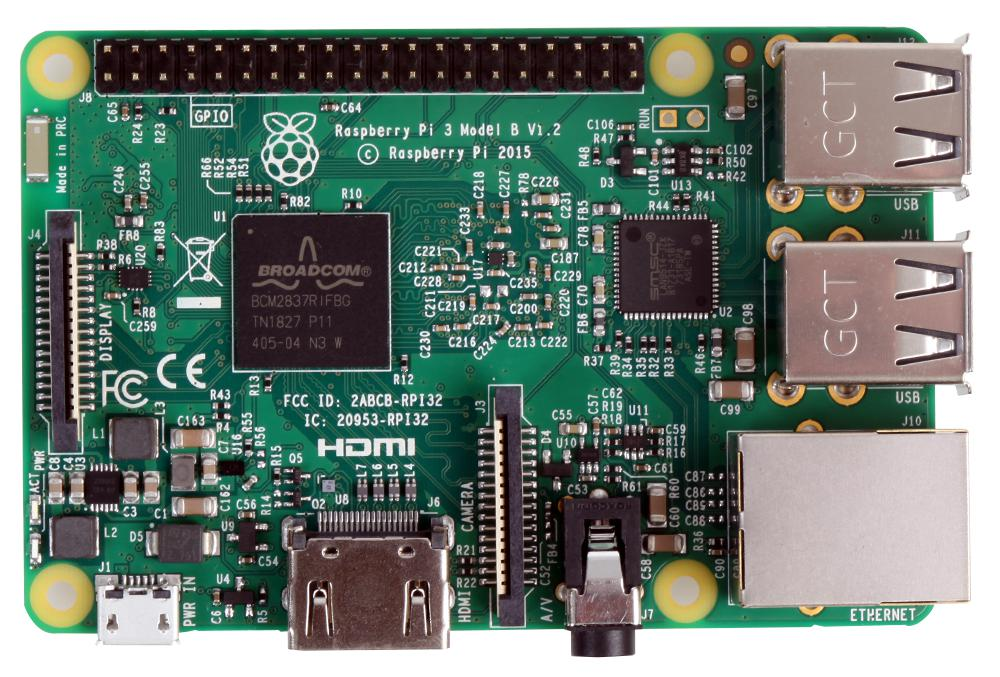
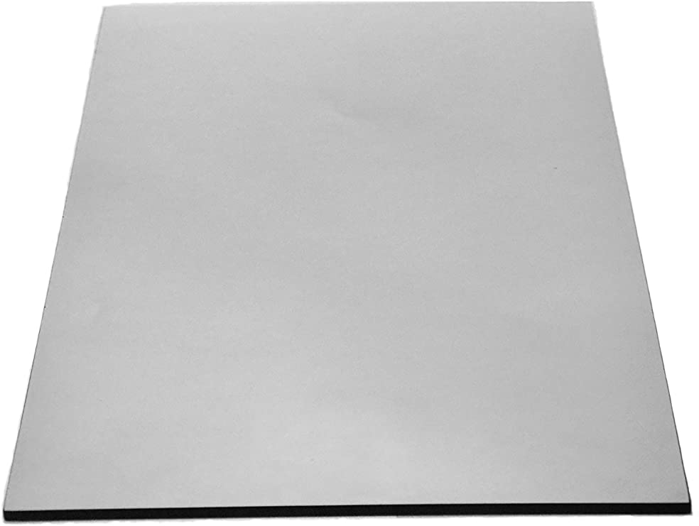
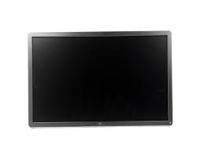
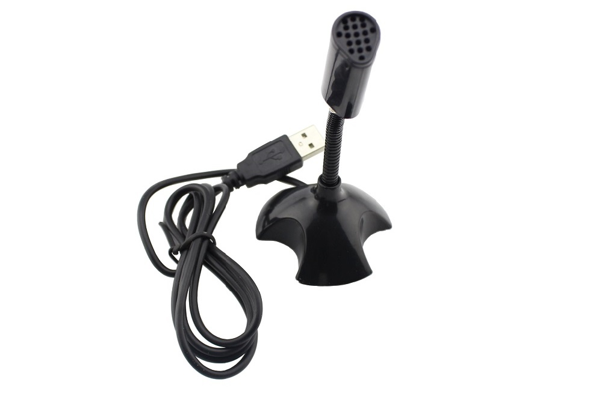
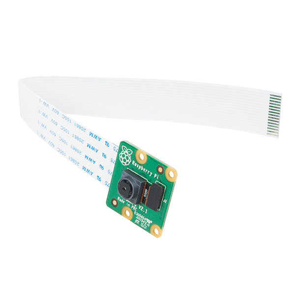
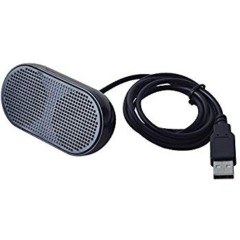
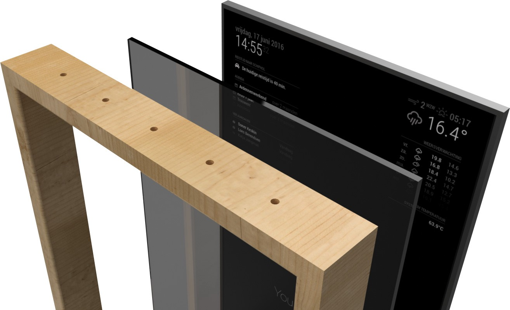

SMART-MIRROR
>What is a Smart Mirror?
The smart mirror improves quality of life, by providing information to the users in the most convenient way possible every day. The goal of the mirror is to provide information in the morning while people are getting ready for the day or at night before going to bed. This will save users time every day and help to ensure they are aware about important details in their day. A user will be able to view time of the day, peek at the weather forecast, and not to mention, check their calendar for any upcoming events. The main aim of this project is to develop a smart mirror which will show the person(s) in front of it like a regular mirror in addition to many features. The Smart Mirror will help in developing smart houses with embedded artificial intelligence.
>What softwares were used?
>What are the components used?
- Raspberry Pi 3 Model B+
This is the backbone of our project and it is used to fulfill all computational requests. But RPi lacks a hard drive and operating system. So, we used a microSD card in order to install Raspbian using OS image and all the software related code for the magic mirror.
- 2-way mirror
 This is the part of the mirror that is responsible for creating the futuristic effect. According to Wikipedia: “A one¬way mirror, sometimes called two¬way mirror, is a mirror that is partially reflective and partially transparent. When one side of the mirror is brightly lit and the other is dark, it allows viewing from the darkened side but not vice versa (Loy, 1999).” In this project, it is placed in front of the monitor, so that the black elements that are displayed on the screen will be seen as a reflection and the light elements will be seen normally. So if there is white text over a black background the white text will be seen as an overlay with the user reflected in the background.
- Monitor
 For the display a 24 inch LG monitor was bought. The monitor is much smaller than the mirror. An HDMI cable was used to connect the display screen to the Raspberry Pi for video output. It is used to display all the necessary information which are useful for the user.
- USB Microphone
 Since Raspberry Pi does not have a regular microphone input, we used USB microphone. It is a cheap simple which is connected through a USB sound card to the Pi. It is used for google assistant module.
- Raspberry Pi Camera Module v2
It is used as a webcam which is placed behind the mirror and used to recognize the user standing in front of the mirror.
- Speaker
It is a simple 3.5mm jack speaker which we used for the speech output of the google assistant.
- Mirror Frame
The frame is made of wood and it is used to hold all the components in a nice way.
>Design Description
>Video Demo: